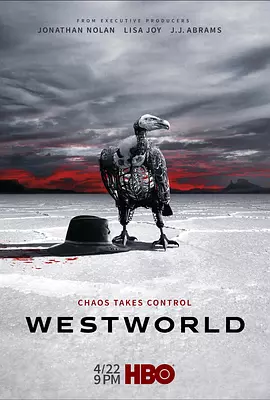

8.8
西部世界 第二季
Westworld Season 2
2018
美国
评分 8.8
导演:
理查德·J·刘易斯 / 文森佐·纳塔利 / 丽莎·乔伊 / 克雷格·佐贝尔 / 塔里克·萨利赫
演员:
埃文·蕾切尔·伍德 / 坦迪·牛顿 / 詹姆斯·麦斯登 / 吉米·辛普森 / 妲露拉·莱莉
类型:
悬疑,科幻,西部
剧情简介
枪声尚未从荒野上散去，乐园内部已经彻底改换了气息。曾经循规蹈矩的接待员不再重复既定的对白，他们沿着新生的意识轨迹行动，脚步坚定而冷静，像是终于掌握了自己命运的钥匙。多洛莉丝在破败的街道间穿行，她的目光凌厉，举止中透着前所未有的自主与决断；梅芙则以另一种方式游走，她在混乱的人潮与系统漏洞之间不断寻找线索，每一步都带着细微却坚决的坚持。管理层的指挥中心，此刻也变得像一座摇晃的堡垒。监控屏幕上闪烁着大量异常提示，让技术团队焦头烂额；武装人员在通道里穿梭，却始终无法判断下一次袭击会来自哪里。权力的平衡在不断倾斜，主管者们的决策愈发急促，仿佛每延迟一秒，都会让局势再失控一分。荒原深处，黑衣人重新踏上旅途。他在废墟与尘土之间寻找那些被隐藏得更深的谜团，每一次遭遇都像是在检验他的信念。他与接待员之间的互动愈发复杂，边界模糊得几乎难以辨认。与此同时，乐园外部的力量也开始向内渗透，新的规则、暗藏的计划与未曾公开的真相逐渐浮现。随着多个势力的目标交错，乐园像一台被拆开保护壳的精密机件，内部的齿轮正以不可预测的速度高速运转。意识觉醒带来的震荡不断向四周蔓延，角色们在混乱中寻找方向，却谁也无法确定未来究竟会通往掌控，还是毁灭。